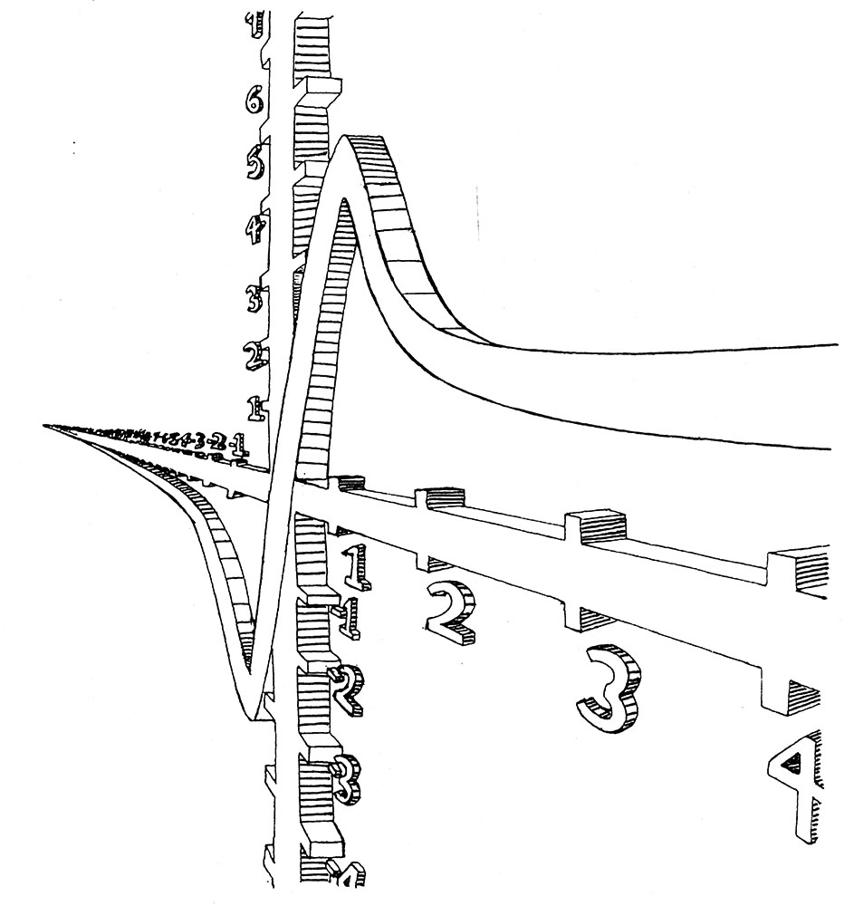

2) Image"/>
10x/(1+x2) (1989)
This image was the T-shirt graphic for the 1990 South Carolina All-State Math Team. I made it as a high-school senior, hoping to be on the team myself, but alas! I didn't make it. They did, however, give me a T-shirt and a copy of Archimedes' Revenge by Paul Hoffman, which I enjoyed immensely and is a fantastic book for any high-schooler with a budding interest in math.
Mathematics has always offered a beauty and perfection that I find very attractive. I didn't just want to use math. I wanted to fly around it and live in it. This image was my first attempt to do that. In retrospect, it's easy to see from this image how hungry I was for some kind of 3D graphics software. It makes me appreciate the folks who made Blender all the more.
© W. Rhett Davis 1989